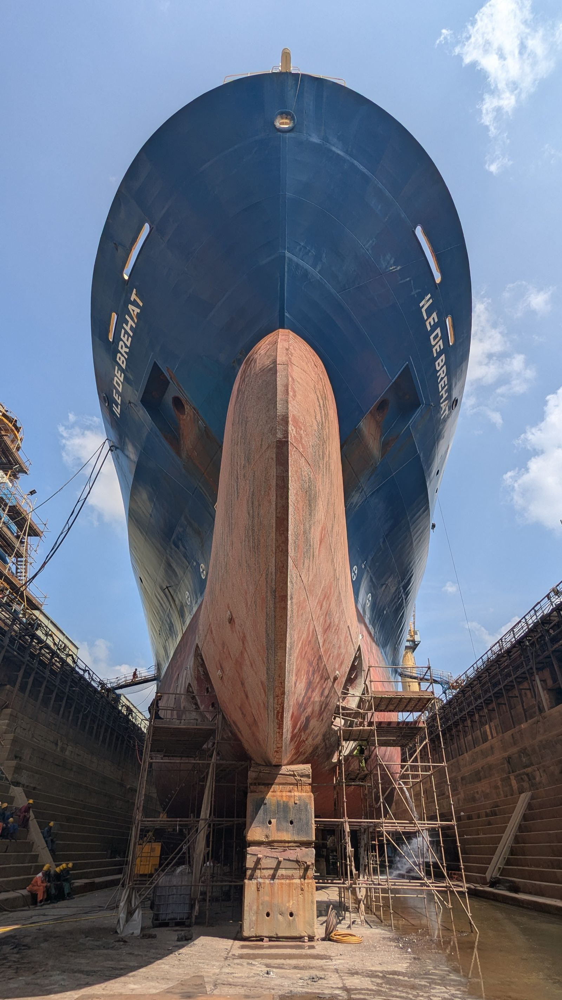

The wastage two dockings missed
THE BRIEF
A fourteen-year-old research submersible entering a mid-life refit. Two previous dockings had reported the pressure hull “within tolerance” — on gaugings taken at frame mid-bays, where a hull is always healthiest.
THE DECISIONS
Gauge where the water sits, not where the light is good. The survey ran a 250 mm ultrasonic grid at the frame toes under the lagging, where condensation collects against the shell. Three frame bays had pitted locally to 68% of original thickness — inside the corrosion allowance on average, outside it at the pit floors, which is where a buckling check reads its numbers. The renewal was specified as local insert plates rather than cropping frames: less steel, less distortion, and the refit's other work untouched.
THE OUTCOME
The 1,000 m rating was retained. The classification society accepted the report as written — the gauging tables were the argument. The refit gained nine days; the operator gained a gauging baseline every future survey will be measured against. It is this engagement the testimonial on the overview page is attached to.